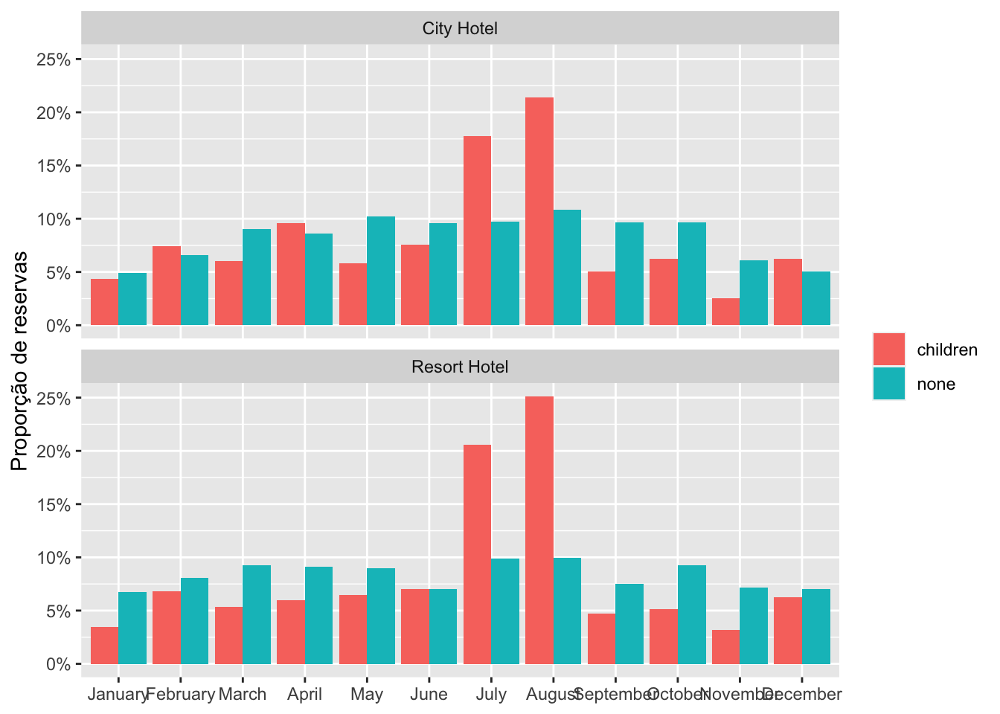
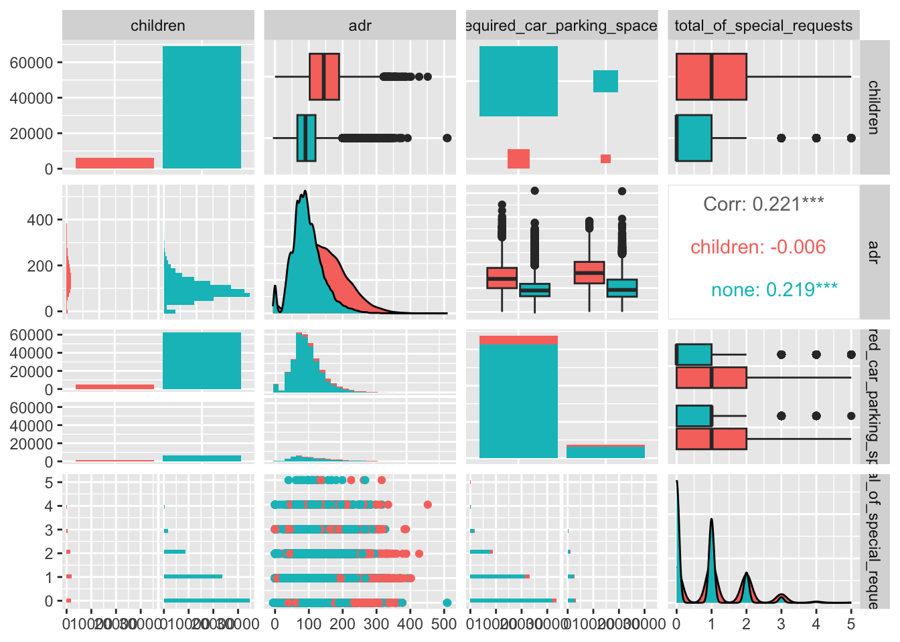
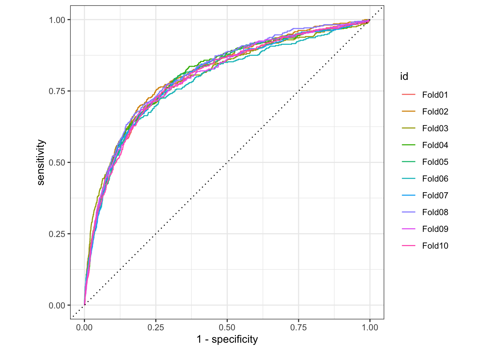
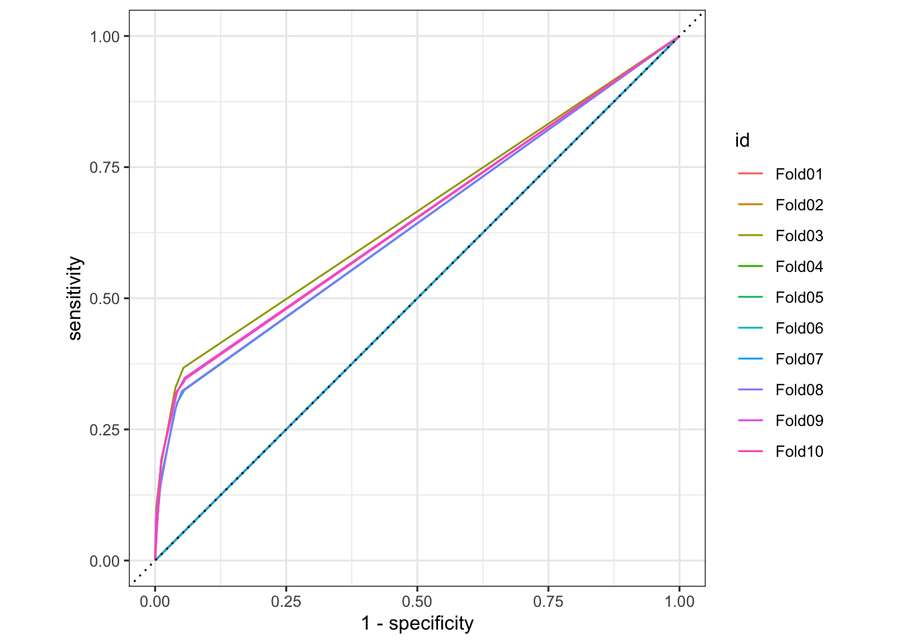
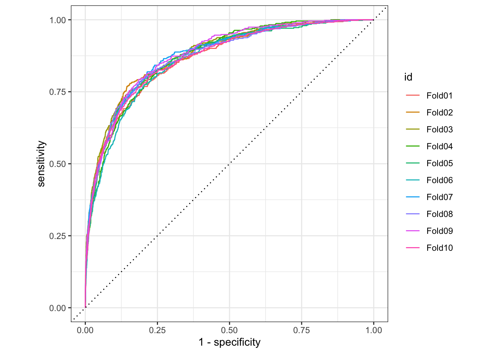
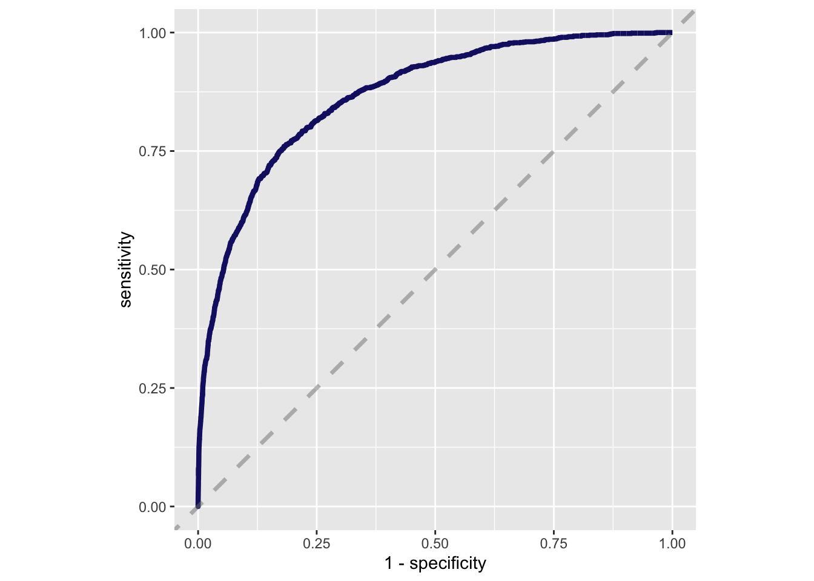

library(tidyverse)
hotels <- readr::read_csv("https://raw.githubusercontent.com/rfordatascience/tidytuesday/master/data/2020/2020-02-11/hotels.csv")Lab 4 - Tidymodels - Classificação
Previsão de reservas de hotel com crianças
Carregando os dados
Este webinar usará dados sobre reservas de Hotéis que incluem crianças (versus aquelas que não. Os dados fazem parte deste estudo.
Vamos carregar os dados e incluir apenas as reservas que não foram canceladas uma vez que mais informações são coletadas do hospede na hora do check-in. Neste caso, os dados são automaticamente baixados do site do tidytuesday.
Limpeza dos dados
Inicialmente é necessário fazer uma limpeza dos dados. Por exemplo, vamos considerar apenas as reservas efetivadas (e não as canceladas), portanto precisamos filtrá-las. Também vamos considerar bebês e crianças dentro da mesma categoria, então iremos criar uma nova coluna ‘children’.
hotel_stays <- hotels %>%
filter(is_canceled == 0) %>%
mutate(
children = case_when(
children + babies > 0 ~ "children",
TRUE ~ "none"
),
required_car_parking_spaces = case_when(
required_car_parking_spaces > 0 ~ "parking",
TRUE ~ "none"
)
) %>%
select(-is_canceled, -reservation_status, -babies)
hotel_stays %>%
head()# A tibble: 6 × 29
hotel lead_time arrival_date_year arrival_date_month arrival_date_week_nu…¹
<chr> <dbl> <dbl> <chr> <dbl>
1 Resort … 342 2015 July 27
2 Resort … 737 2015 July 27
3 Resort … 7 2015 July 27
4 Resort … 13 2015 July 27
5 Resort … 14 2015 July 27
6 Resort … 14 2015 July 27
# ℹ abbreviated name: ¹arrival_date_week_number
# ℹ 24 more variables: arrival_date_day_of_month <dbl>,
# stays_in_weekend_nights <dbl>, stays_in_week_nights <dbl>, adults <dbl>,
# children <chr>, meal <chr>, country <chr>, market_segment <chr>,
# distribution_channel <chr>, is_repeated_guest <dbl>,
# previous_cancellations <dbl>, previous_bookings_not_canceled <dbl>,
# reserved_room_type <chr>, assigned_room_type <chr>, …Observamos que há quase 10x mais reservas sem crianças.
hotel_stays %>%
count(children)# A tibble: 2 × 2
children n
<chr> <int>
1 children 6073
2 none 69093Análise exploratória de dados - EDA
Vamos usar a função skim que ajuda a identificar de forma rápida as características do nosso dataframe, por exemplo, se há valores NA bem como os máximos e mínimos das colunas numéricas, etc.
library(skimr)
skim(hotel_stays)| Name | hotel_stays |
| Number of rows | 75166 |
| Number of columns | 29 |
| _______________________ | |
| Column type frequency: | |
| character | 14 |
| Date | 1 |
| numeric | 14 |
| ________________________ | |
| Group variables | None |
Variable type: character
| skim_variable | n_missing | complete_rate | min | max | empty | n_unique | whitespace |
|---|---|---|---|---|---|---|---|
| hotel | 0 | 1 | 10 | 12 | 0 | 2 | 0 |
| arrival_date_month | 0 | 1 | 3 | 9 | 0 | 12 | 0 |
| children | 0 | 1 | 4 | 8 | 0 | 2 | 0 |
| meal | 0 | 1 | 2 | 9 | 0 | 5 | 0 |
| country | 0 | 1 | 2 | 4 | 0 | 166 | 0 |
| market_segment | 0 | 1 | 6 | 13 | 0 | 7 | 0 |
| distribution_channel | 0 | 1 | 3 | 9 | 0 | 5 | 0 |
| reserved_room_type | 0 | 1 | 1 | 1 | 0 | 9 | 0 |
| assigned_room_type | 0 | 1 | 1 | 1 | 0 | 10 | 0 |
| deposit_type | 0 | 1 | 10 | 10 | 0 | 3 | 0 |
| agent | 0 | 1 | 1 | 4 | 0 | 315 | 0 |
| company | 0 | 1 | 1 | 4 | 0 | 332 | 0 |
| customer_type | 0 | 1 | 5 | 15 | 0 | 4 | 0 |
| required_car_parking_spaces | 0 | 1 | 4 | 7 | 0 | 2 | 0 |
Variable type: Date
| skim_variable | n_missing | complete_rate | min | max | median | n_unique |
|---|---|---|---|---|---|---|
| reservation_status_date | 0 | 1 | 2015-07-01 | 2017-09-14 | 2016-09-01 | 805 |
Variable type: numeric
| skim_variable | n_missing | complete_rate | mean | sd | p0 | p25 | p50 | p75 | p100 | hist |
|---|---|---|---|---|---|---|---|---|---|---|
| lead_time | 0 | 1 | 79.98 | 91.11 | 0.00 | 9.0 | 45.0 | 124 | 737 | ▇▂▁▁▁ |
| arrival_date_year | 0 | 1 | 2016.15 | 0.70 | 2015.00 | 2016.0 | 2016.0 | 2017 | 2017 | ▃▁▇▁▆ |
| arrival_date_week_number | 0 | 1 | 27.08 | 13.90 | 1.00 | 16.0 | 28.0 | 38 | 53 | ▆▇▇▇▆ |
| arrival_date_day_of_month | 0 | 1 | 15.84 | 8.78 | 1.00 | 8.0 | 16.0 | 23 | 31 | ▇▇▇▇▆ |
| stays_in_weekend_nights | 0 | 1 | 0.93 | 0.99 | 0.00 | 0.0 | 1.0 | 2 | 19 | ▇▁▁▁▁ |
| stays_in_week_nights | 0 | 1 | 2.46 | 1.92 | 0.00 | 1.0 | 2.0 | 3 | 50 | ▇▁▁▁▁ |
| adults | 0 | 1 | 1.83 | 0.51 | 0.00 | 2.0 | 2.0 | 2 | 4 | ▁▂▇▁▁ |
| is_repeated_guest | 0 | 1 | 0.04 | 0.20 | 0.00 | 0.0 | 0.0 | 0 | 1 | ▇▁▁▁▁ |
| previous_cancellations | 0 | 1 | 0.02 | 0.27 | 0.00 | 0.0 | 0.0 | 0 | 13 | ▇▁▁▁▁ |
| previous_bookings_not_canceled | 0 | 1 | 0.20 | 1.81 | 0.00 | 0.0 | 0.0 | 0 | 72 | ▇▁▁▁▁ |
| booking_changes | 0 | 1 | 0.29 | 0.74 | 0.00 | 0.0 | 0.0 | 0 | 21 | ▇▁▁▁▁ |
| days_in_waiting_list | 0 | 1 | 1.59 | 14.78 | 0.00 | 0.0 | 0.0 | 0 | 379 | ▇▁▁▁▁ |
| adr | 0 | 1 | 99.99 | 49.21 | -6.38 | 67.5 | 92.5 | 125 | 510 | ▇▆▁▁▁ |
| total_of_special_requests | 0 | 1 | 0.71 | 0.83 | 0.00 | 0.0 | 1.0 | 1 | 5 | ▇▁▁▁▁ |
As reservas de Hotel variam de acordo com o mês? há diferenças entre Hotéis Resort e Hotéis de Executivo?
hotel_stays %>%
mutate(arrival_date_month = factor(arrival_date_month,
levels = month.name
)) %>%
count(hotel, arrival_date_month, children) %>%
group_by(hotel, children) %>%
mutate(proportion = n / sum(n)) %>%
ggplot(aes(arrival_date_month, proportion, fill = children)) +
geom_col(position = "dodge") +
scale_y_continuous(labels = scales::percent_format()) +
facet_wrap(~hotel, nrow = 2) +
labs(
x = NULL,
y = "Proporção de reservas",
fill = NULL
)
Vamos explorar algumas outras relações entre as variáveis:
library(GGally)
hotel_stays %>%
select(
children, adr,
required_car_parking_spaces,
total_of_special_requests
) %>%
ggpairs(mapping = aes(color = children))
Modelagem supervisionada usando Tidymodels
O pacote tidymodels é uma evolução do caret e procura facilitar a construção de modelos de machine learning, seguindo um padrão que independe do modelo a ser construído (regressão linear, árvores de decisão, etc.).
Para isto, vamos selecionar apenas algumas colunas de interesse e criar um novo objeto denominado hotels_df.
hotels_df <- hotel_stays %>%
select(
children, hotel, arrival_date_month, meal, adr, adults,
required_car_parking_spaces, total_of_special_requests,
stays_in_week_nights, stays_in_weekend_nights
) %>%
mutate_if(is.character, factor)Vamos dividir o dataset em treino e teste:
library(tidymodels)
set.seed(1234)
hotel_split <- initial_split(hotels_df, strata=children)
hotel_train <- training(hotel_split)
hotel_test <- testing(hotel_split)Para aprimorar a robustez das nossas estimações, iremos usar um procedimento denominado k-fold cross validation ou validação cruzada. Neste procedimento, os dados de treino são subdivididos aleatoriamente em treino e teste e seus parâmetros de acurácia são calculados. Este procedimento é repetido ‘k’ vezes de forma que sejam calculados os parâmetros de acurácia de cada ‘k’. Uma vez que o procedimento é completado (ajustando o modelo a cada ‘k’ subdataset de treino e teste), calcula-se a média de todos os parâmetros de acurácia. Mais detalhes aqui.
hotel_fold <- vfold_cv(hotel_train)
hotel_rec <- recipe(children ~ ., data = hotel_train) %>%
step_dummy(all_nominal(), -all_outcomes()) %>%
step_normalize(all_numeric())
hotel_wf <- workflow() %>%
add_recipe(hotel_rec)Vamos treinar um modelo de Regressão Logística (usando glm), logo um de Árvore de Decisão (usando rpart) e finalmente um de Random Forest (usando ranger)
glm_spec <- logistic_reg() %>%
set_engine("glm")
tree_spec <- decision_tree() %>%
set_engine("rpart") %>%
set_mode("classification")
rf_spec <- rand_forest(trees=1000) %>%
set_engine("ranger") %>%
set_mode("classification")Segue os resultados do modelo de Regressão Logística:
doParallel::registerDoParallel()
glm_rs <- hotel_wf %>%
add_model(glm_spec) %>%
fit_resamples(resamples=hotel_fold,
metrics=metric_set(roc_auc, accuracy, sensitivity, specificity),
control=control_resamples(save_pred=TRUE))
collect_metrics(glm_rs)# A tibble: 4 × 6
.metric .estimator mean n std_err .config
<chr> <chr> <dbl> <int> <dbl> <chr>
1 accuracy binary 0.919 10 0.00121 Preprocessor1_Model1
2 roc_auc binary 0.799 10 0.00266 Preprocessor1_Model1
3 sensitivity binary 0.0896 10 0.00308 Preprocessor1_Model1
4 specificity binary 0.992 10 0.000439 Preprocessor1_Model1glm_rs %>%
conf_mat_resampled()# A tibble: 4 × 3
Prediction Truth Freq
<fct> <fct> <dbl>
1 children children 41
2 children none 39.1
3 none children 418.
4 none none 5140. glm_rs %>%
collect_predictions() %>%
group_by(id) %>%
roc_curve(children, .pred_children) %>%
autoplot()
Segue os resultados do modelo de Árvore de Decisão:
tree_rs <- hotel_wf %>%
add_model(tree_spec) %>%
fit_resamples(resamples=hotel_fold,
metrics=metric_set(roc_auc, accuracy, sensitivity, specificity),
control=control_resamples(save_pred=TRUE))
collect_metrics(tree_rs)# A tibble: 4 × 6
.metric .estimator mean n std_err .config
<chr> <chr> <dbl> <int> <dbl> <chr>
1 accuracy binary 0.921 10 0.00126 Preprocessor1_Model1
2 roc_auc binary 0.574 10 0.0246 Preprocessor1_Model1
3 sensitivity binary 0.0481 10 0.0198 Preprocessor1_Model1
4 specificity binary 0.998 10 0.00109 Preprocessor1_Model1tree_rs %>%
conf_mat_resampled()# A tibble: 4 × 3
Prediction Truth Freq
<fct> <fct> <dbl>
1 children children 22.2
2 children none 10.1
3 none children 436.
4 none none 5169. tree_rs %>%
collect_predictions() %>%
group_by(id) %>%
roc_curve(children, .pred_children) %>%
autoplot()
Segue os resultados do modelo Random Forest:
rf_rs <- hotel_wf %>%
add_model(rf_spec) %>%
fit_resamples(resamples=hotel_fold,
metrics=metric_set(roc_auc, accuracy, sensitivity, specificity),
control=control_resamples(save_pred=TRUE))
collect_metrics(rf_rs)# A tibble: 4 × 6
.metric .estimator mean n std_err .config
<chr> <chr> <dbl> <int> <dbl> <chr>
1 accuracy binary 0.928 10 0.000787 Preprocessor1_Model1
2 roc_auc binary 0.872 10 0.00199 Preprocessor1_Model1
3 sensitivity binary 0.152 10 0.00387 Preprocessor1_Model1
4 specificity binary 0.997 10 0.000342 Preprocessor1_Model1rf_rs %>%
conf_mat_resampled()# A tibble: 4 × 3
Prediction Truth Freq
<fct> <fct> <dbl>
1 children children 70
2 children none 16.7
3 none children 389.
4 none none 5162 rf_rs %>%
collect_predictions() %>%
group_by(id) %>%
roc_curve(children, .pred_children) %>%
autoplot()
O melhor modelo é o Random Forest, portanto o usaremos para realizar as estimações finais no dataset de teste. A função last_fit() realiza um último ajuste (fit) usando os dados de treino (dentro da especificação rf_spec) e automaticamente uma última estimação, usando os dados de teste (a função reconhece os dados de treino e teste no objeto hotel_split).
Note que até agora, não usamos em nenhum momento os dados de teste.
modelo_final <- hotel_wf %>%
add_model(rf_spec) %>%
last_fit(hotel_split)
collect_metrics(modelo_final)# A tibble: 2 × 4
.metric .estimator .estimate .config
<chr> <chr> <dbl> <chr>
1 accuracy binary 0.930 Preprocessor1_Model1
2 roc_auc binary 0.868 Preprocessor1_Model1collect_predictions(modelo_final) %>%
conf_mat(children, .pred_class) Truth
Prediction children none
children 234 62
none 1252 17244collect_predictions(modelo_final) %>%
roc_curve(children, .pred_children) %>%
ggplot(aes(x = 1 - specificity, y = sensitivity)) +
geom_line(size = 1.5, color = "midnightblue") +
geom_abline(
lty = 2, alpha = 0.5,
color = "gray50",
size = 1.2
) +
coord_equal()